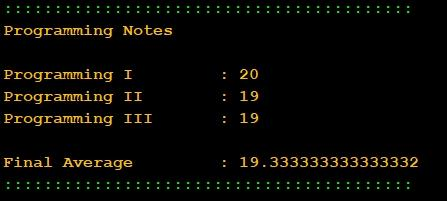

| Exercício | Dificuldade | Pontos | Data limite | Créditos |
| Ficha03_037
|
Normal |
4.0 |
07/09/2022 16:15:00 |
(c)M@nso 2021 |
Average Programming Score
It is intended to build a program to calculate the average of the staff grades of three programming courses:
Programming I
Programming II
Programming III
Build an algorithm that randomly generates the grades of the courses and then computes the average sum.
The grades are random integer values in the interval [0,20].

| Input |
Output |
|
Programming Notes
Programming I : 15
Programming II : 8
Programming III : 4
Final Average : 9.0 |
Algorithmi 22.05 Student version
(c) Antonio M@nso 2022
Instituto Politécnico de Tomar - All rights reserved